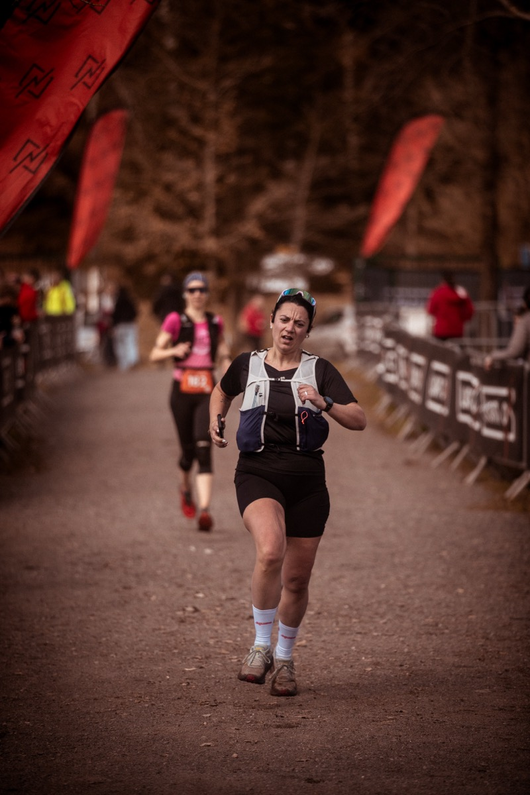
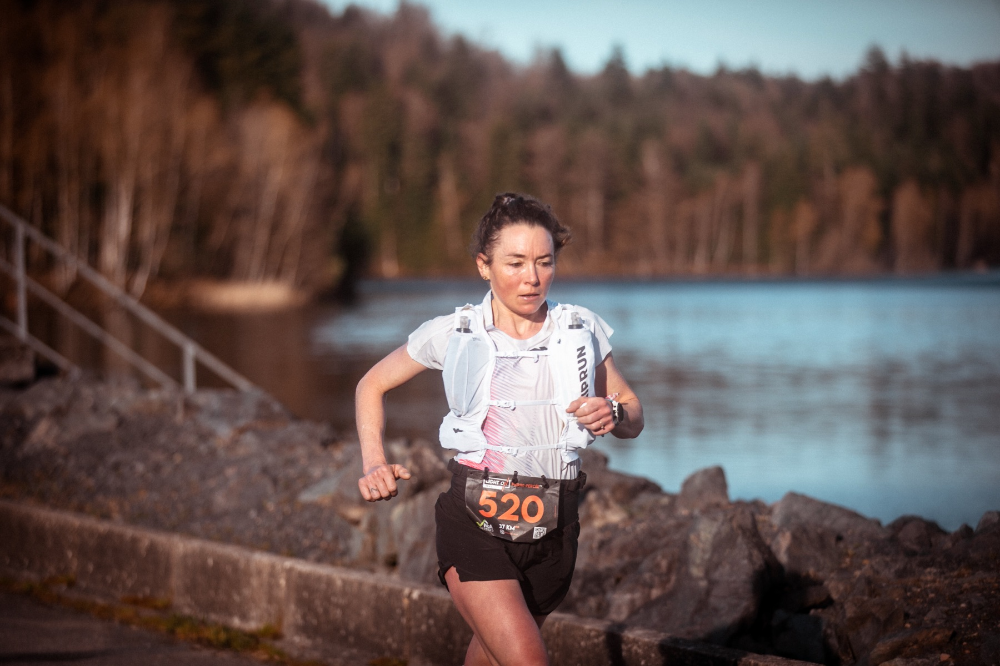
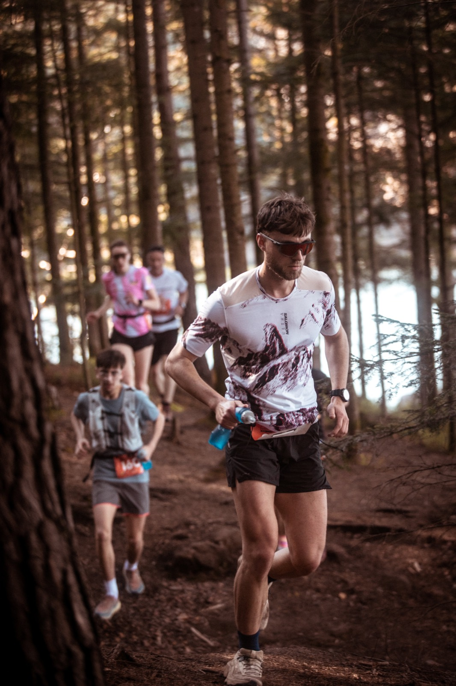

Light On Trail Pierre-Percée***
17, 37 ou 54 KM : trois façons de découvrir Pierre-Percée.
Une seule règle : en profiter.
Les courses***
Traces, profils et détails →Le bord du lac, quelques vraies montées et tout le paysage. Parfait pour un premier trail ou une reprise.

Crêtes, forêts, passages techniques et 1 250 m de D+. Le format pour ceux qui aiment quand ça grimpe.

Le grand format sur les reliefs qui dominent le lac, avec 1 900 m de D+. Départ 7h30 : prévoyez le café avant.

Le goût de l'effort, grandeur nature.
Le plus grand lac de Lorraine, son massif forestier et un seul village de départ, à Celles-sur-Plaine.
La course, et tout ce qu'il y a autour.
Dossards la veille, courses le dimanche, village ouvert tout le week-end. Les supporters sont les bienvenus (leurs encouragements aussi).
Le programme
Samedi 3 avril, retrait des dossards. Dimanche 4 avril, départs à 7h30, 8h30 et 9h30, podiums à midi.
Le village
Départ, arrivée, ravitaillement final, stands et buvette : tout se passe au même endroit.
Préparer sa venue
Accès, hébergements, matériel, FAQ : l'essentiel avant le départ.
Retour sur 2026
750 inscrits sur le 17 KM* et le 37 KM**, un lac et beaucoup de sourires.


soutiennent


Quoi de neuf ?
Toutes les actualités →Les inscriptions sont ouvertes
Le 17 KM*, le 37 KM** et le 54 KM*** vous attendent. Les dossards sont limités : ne traînez pas trop.
Cap sur l'édition 2027
Rendez-vous le dimanche 4 avril 2027 au bord du lac, avec un village ouvert dès le samedi.
Rejoindre le LIGHT ON Crew
Ravitaillements, balisage, village : l'événement se construit avec ses bénévoles. Les inscriptions bénévoles 2027 seront annoncées bientôt.

On se voit sur la ligne de départ ?
Les inscriptions sont ouvertes. Choisissez votre distance, on s'occupe du reste.